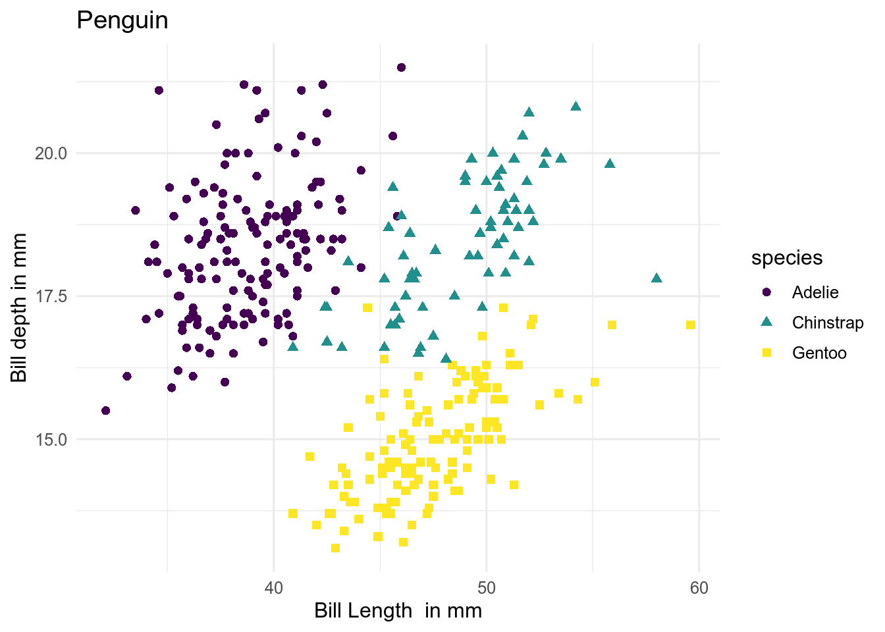
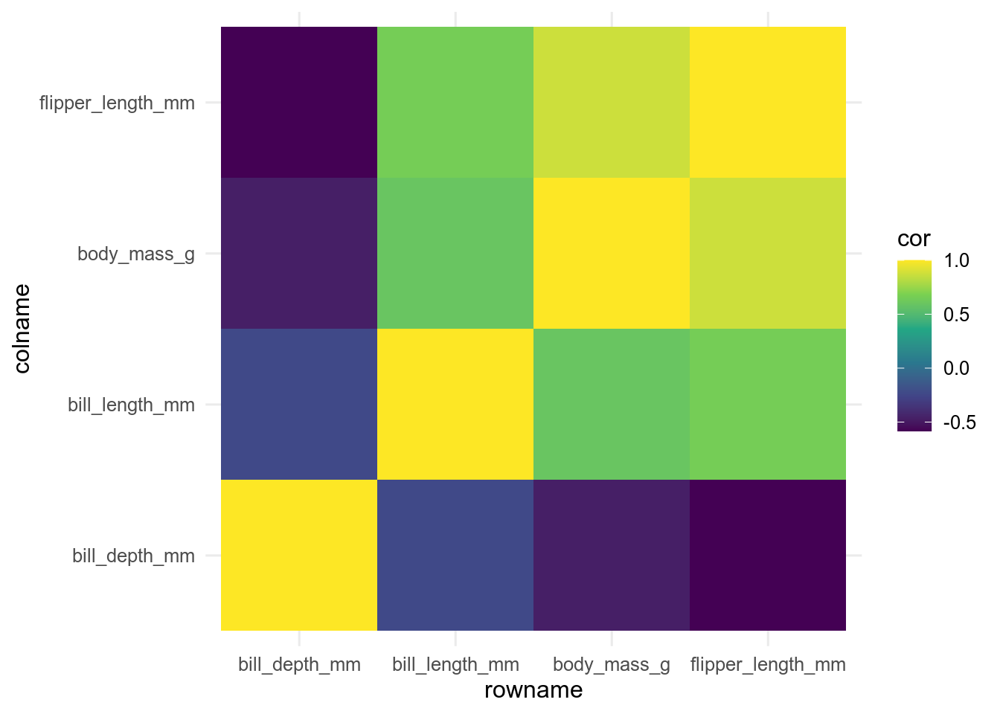

11 Types of vizualization
The type of data will define what type of plot you can make. For example with continuous data you can make a scatter plot, but you will need categorical data to make a boxplot. The next step is then to think about what you want to show with the figure. What are the important elements to vizualise.
Here, we present a number of common plot types related to different types of data. The code to make each plot is always shown above or below the plot.
If you are very uncertain, here is a guide to help you choose the plot type.
In ggplot, the geom_xxx() function defines the type of plot that is drawn.
In the first example, we use geom_point(), which makes dots or is also called a scatterplot.
ggplot(data = penguins, aes(x = bill_length_mm, y = bill_depth_mm, colour = species, shape = species)) +
geom_point(size = 2) +
labs(title = "Penguin", x = "Bill Length in mm", y = "Bill depth in mm") +
scale_color_viridis_d()
11.1 Continous data
Continuous data is often visualized using a scatterplot or boxplot. A heatmap can also be used (see below).

11.1.1 Scatterplot
A scatterplot is made using the function geom_point().
ggplot(data = penguins, aes(x = bill_length_mm, y = bill_depth_mm, colour = species, shape = species)) +
geom_point(size = 2) +
labs(x = "Bill Length in mm", y = "Bill depth in mm") +
scale_color_viridis_d()
11.1.2 Boxplot
Similarly, a boxplot uses the function geom_boxplot().
ggplot(data = penguins, aes(x = species, y = bill_length_mm, fill = species)) +
geom_boxplot() +
labs(x = "", y = "Bill Length in mm") +
scale_fill_viridis_d()
What does a boxplot show? The bold line in the middle of the box shows the median. Half of the data points are larger and half are lower then the median.
The box represents the 50% quartile. Basically, half of the observations fall into the box and half of them outside.
The wiskers of each side of the box show the 25% upper and lower quartile.
Outliers are shown as points above and below the wiskers.
For more details on boxplots see here.
How to interprete a boxplot The boxplots show the distribution of the data. A tall box means that the data is variable, while a short box means that most data points are similar to the median.
Boxplots make it easy to compare different groups. If the boxplots are placed at different heights, this means that the groups that are compared are different. A boxplot is however not a test, but gives an indication if groups differ from each other. ## {.toc-ignore}
11.2 Categorical data, factors and groups
Categorical data, factors and groups is often vizualized using boxplots, but other types of plots like scatterplots are possible. We can use fill, colour, size, shape or linetype to distinguish the different groups in the plot. Another option is to divide the plot into subplots using the facet function.

11.2.1 Scatterplot
Shape and colour can be used to show the different groups.
ggplot(data = penguins, aes(x = bill_length_mm, y = bill_depth_mm, colour = species, shape = species)) +
geom_point(size = 2) +
labs(x = "Bill Length in mm", y = "Bill depth in mm") +
scale_color_viridis_d()
11.2.2 Boxplot
Boxplots are commonly used to show factors and groups.
ggplot(data = penguins, aes(x = species, y = bill_length_mm, fill = species)) +
geom_boxplot() +
labs(x = "", y = "Bill Length in mm") +
scale_fill_viridis_d() ## {.toc-ignore}
## {.toc-ignore}11.3 Distributions
Histograms and density plots are most commonly used to plot distributions. To visualize several densities at the same time, boxplots, violin and sina plot can be useful. Violin and sina plots are an extension to the boxplots. They also show the actual distribution of the data or the data iteslf. Another type of plots are rigdeline plots.

11.3.1 Histogram
Histograms display counts in a size class using bars. The argument bins can be used to define how many size classes should be used.
ggplot(data = penguins, aes(x = bill_length_mm)) +
geom_histogram(bins = 50) +
labs(x = "Bill Length in mm")11.3.2 Densities
Similarly to the histgrams, density plots show the kernel desnity estimate. This is a smoothed version of a histogram.
Densities can for example be coloured by species to show each species distribution separately.
Note that we have added alpha = 0.5, which makes the fill transparent and we can see the three distributions more clearly.
ggplot(data = penguins, aes(x = bill_length_mm, fill = species)) +
geom_density(alpha = 0.5) +
labs(x = "Bill Length in mm")11.3.3 Violin
Violin plots…
ggplot(data = penguins, aes(x = species, y = bill_length_mm, fill = species)) +
geom_violin(draw_quantiles = c(0.25, 0.5, 0.75)) +
labs(x = "", y = "Bill Length in mm")11.3.4 Sina
Sina plots are in the ggforce package. The package needs to be installed before this function can be used.
Sina plots show the data in the form of the density distribution. A very informative way, is to plot the violin plot and the data on top of it.
library("ggforce")
ggplot(data = penguins, aes(x = species, y = bill_length_mm, colour = species)) +
geom_violin() +
geom_sina() +
labs(x = "", y = "Bill Length in mm")11.4 Proportions
Proportions are often displayed using barplots or stacked barplots.
## Error in knitr::include_graphics("figures/Proportions.png"): Cannot find the file(s): "figures/Proportions.png"11.4.1 Bars
We can use either geom_col() or geom_bar() to create a barplot.
geom_col makes the heights of the bars to represent the values in the data.
geom_bar on the other hand makes the height of the bar proportional to the number of cases in each group.
When using geom_bar, we must not forget the argument stat = "identity", which

11.4.2 Stacked bars
Grouped bars A grouped barplot displays the values, here bill length for the three different species in the three years the data was collected. Note year needs to be a factor
x is a group, y is the continous variable with the data, fill is the subgroup.
in geom_bar() the argument position and stat need to be defined.
The argument position = "dodge" defines the position of the bars, so next to each other.
ggplot(data = penguins, aes(x = species, y = bill_length_mm, fill = factor(year))) +
geom_bar(position = "dodge", stat = "identity")Stacked bars
The bars can also be stacked.
Here the bars are stacked on top of each other.
Switch the argument position = "stack".
ggplot(data = penguins, aes(x = species, y = bill_length_mm, fill = factor(year))) +
geom_bar(position = "stack", stat = "identity")Proportional
The data can also be displayed proportional.
Now, the percentage of each subgroup is represented, and in each group the bar summs up to 1.
Switch the argument position = "fill".
ggplot(data = penguins, aes(x = species, y = bill_length_mm, fill = factor(year))) +
geom_bar(position = "fill", stat = "identity") ## {.toc-ignore}
## {.toc-ignore}
11.5 x~y relationships
To show the relationship between two continous variables, we often use scatterplots. Densities between two variables can be shown using contour lines, while for correlations we can use a heatmap.
## Error in knitr::include_graphics("figures/XY_relationships.png"): Cannot find the file(s): "figures/XY_relationships.png"11.5.1 Scatterplots
Scatterplots are the most commonly used plot type to show relationships between two continous variables. We can add a regression line to the plot.
ggplot(data = penguins, aes(x = bill_length_mm, y = bill_depth_mm, colour = species)) +
geom_point() +
geom_smooth(method = "lm")## `geom_smooth()` using formula 'y ~ x'
11.5.2 2D density
Scatterplots are the most commonly used plot type to show relationships between two continous variables. We can add a regression line to the plot.
ggplot(data = penguins, aes(x = bill_length_mm, y = bill_depth_mm, colour = species)) +
geom_density2d()11.5.3 Heatmap
What is a correlation and how to calculate it…
# Select only numeric variables and remove all NAs
penguine_matrix <- penguins |>
select(bill_length_mm:body_mass_g) |>
filter(!is.na(bill_length_mm))## select: dropped 4 variables (species, island, sex, year)## filter: removed 2 rows (1%), 342 rows remaining
# Calculate the correlation between all variables and rearrange the table
cor_matrix <- cor(penguine_matrix)
# rearrange
cor_long <- cor_matrix |>
as.data.frame() |>
rownames_to_column() |>
pivot_longer(cols = -rowname, names_to = "colname", values_to = "cor")## pivot_longer: reorganized (bill_length_mm, bill_depth_mm, flipper_length_mm, body_mass_g) into (colname, cor) [was 4x5, now 16x3]Now we can use the function geom_tile to plot the data.
Note that this type of plot is also called a heat map.

## {.toc-ignore}
 ## {.toc-ignore}
## {.toc-ignore}
 ## {.toc-ignore}
## {.toc-ignore}